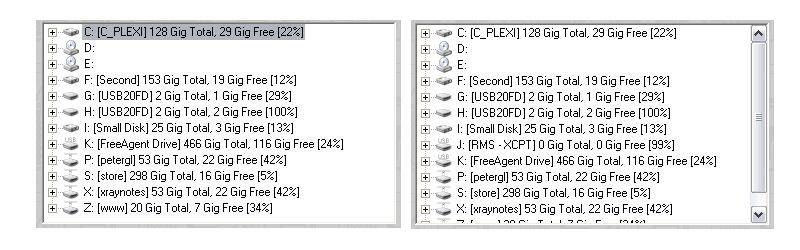

When the computer user inserts a new removable drive, the system notifies every application. When TimeDim receives that notification, it re-scans its drive tree, and reflects the new drive in its list. Timedim also makes a log aentry and shows a clear display feedback of the event. On the screen capture below, we inserted a USB jump drive, timedim rescanned the drive tree and displayed the new drive in its list (Drive 'I:' in this case) 
Rescanned drive Screenshot Before and After T.O.C.
(manual's table of contets)
|
|
TimeDim
Copyright by (C) 2007, Written
by Peter Glen
|